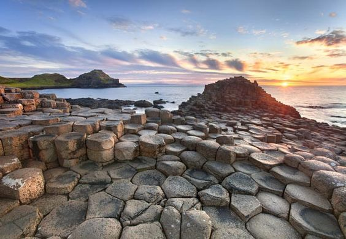

La calzada de los gigantes
La Calzada del Gigante (Giant’s Causeway en inglés) es un paraje natural costero especialmente llamativo por los restos de la actividad volcánica que tuvo lugar en la zona hace aproximadamente unos 60 millones de años y que ha dejado miles de curiosísimas columnas hexagonales de basalto –se estima que alrededor de 38.000- en la zona costera, que se prolongan por más de 17 kilómetros por línea de la costa, se adentran en el mar y llegan a alcanzar los 12 metros de altura.